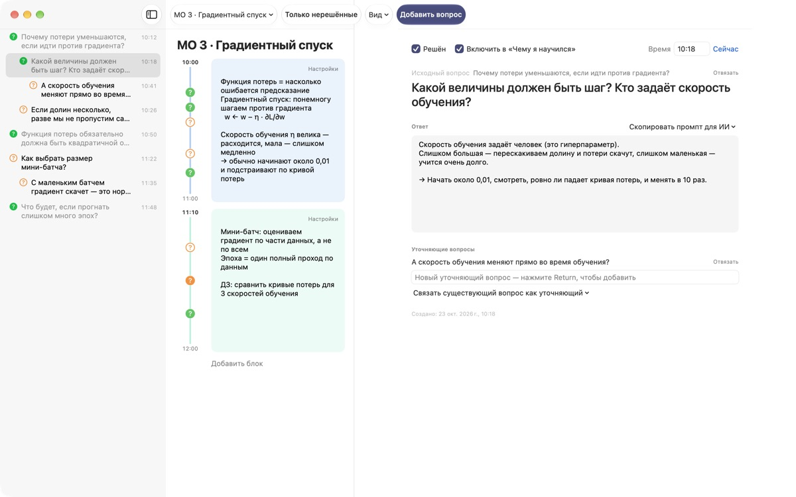
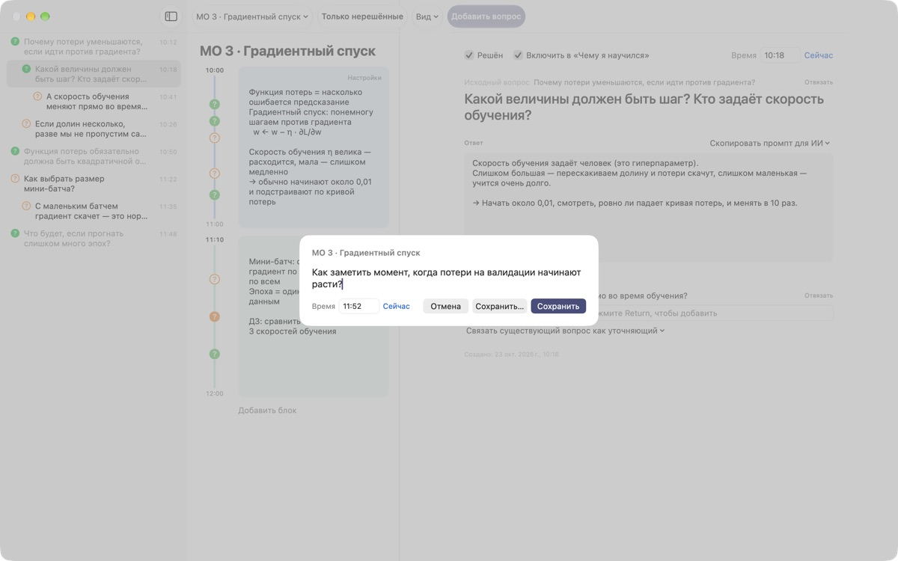
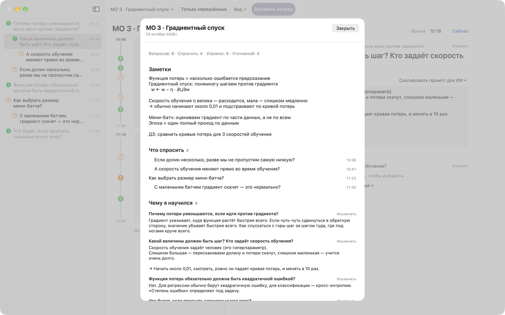
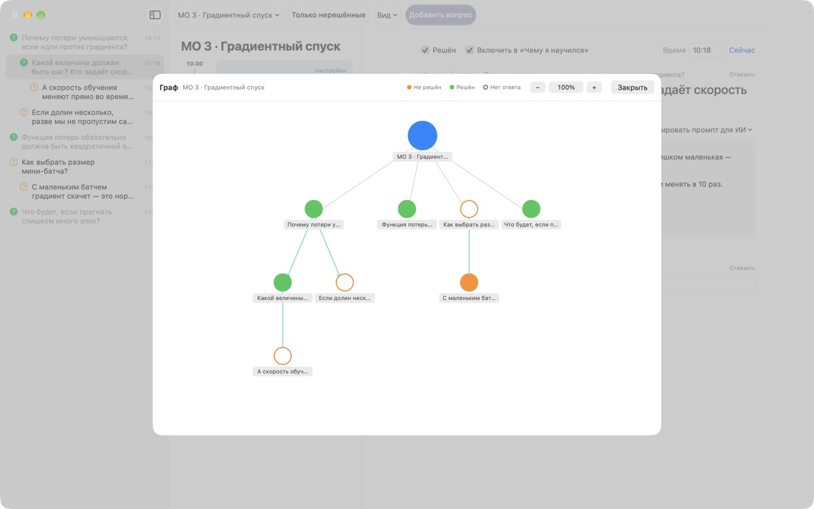

Ни один вопрос с лекции
больше не потеряется
Нажмите ⌘⇧N, напишите строчку, и вопрос встанет рядом с заметками именно этой минуты. Вы слушаете дальше, а ответ ищете потом.
Для macOS 14 и новее. Без учётной записи, всё остаётся на этом Mac.

Попробуйте здесь
Вы на лекции по машинному обучению. Напишите вопрос и сохраните его: рядом с блоком этого времени появится ?. Поставьте время вне блоков, и для вопроса появится новый блок.
После лекции вы ещё помните, что хотели спросить?
Только подумаешь «стоп, а почему?», а лектор уже перешёл к следующему пункту. Вопросительный знак на полях забывает, к какому объяснению относился, и вопрос остаётся без ответа. LectureQ прикрепляет каждый вопрос к заметкам того момента и держит его на виду, пока вы не разберётесь.
Спрашивайте, не пропуская следующую фразу
Окно ввода открывается кнопкой Добавить вопрос на панели инструментов или сочетанием ⌘⇧N. Время подставляется само. Return сохраняет, а ⌘Return сохраняет и сразу готовит место для следующего.
Каждый вопрос появляется как ? рядом со своим блоком времени, и потом сразу видно, из какой части лекции он взялся.

Решённые вопросы становятся знаниями
Напишите ответ своими словами, отметьте вопрос решённым, и он попадёт в раздел «Чему я научился» сводки. Открытые остаются в «Что спросить», так что список к следующему занятию собирается сам.Скопировать промпт для ИИ в карточке вопроса кладёт в буфер обмена готовый промпт с названием лекции и заметками того момента. Остаётся вставить его в ИИ-сервис, которым вы уже пользуетесь.

Видно, куда ушла мысль
Уточняющие вопросы выстраиваются с отступом под вопросом, из которого выросли, а граф соединяет их стрелками. Нажмите на узел, чтобы сразу перейти к вопросу.
В «Состоянии обучения» можно записать, где вы сейчас, где хотите оказаться к концу курса и что хотите узнать, и сравнить.

Начать можно за три шага
- 1
Создайте лекцию
В меню лекций слева на панели инструментов или импортируйте разговор, сохранённый в Markdown.
- 2
Записывайте сразу
Нажмите
⌘⇧N. Хватит одной строчки, время уже стоит. - 3
Ответьте потом
Напишите ответ и нажмите ?, чтобы отметить вопрос решённым. Он перейдёт в «Чему я научился».
Сочетания клавиш
- ⌘⇧N
- Добавить вопрос
- Return
- Сохранить
- ⌘Return
- Сохранить и писать следующий
- Esc
- Отменить
- ⌘1
- Сводка: что спросить, чему научились, заметки
- ⌘2
- Граф: исходные и уточняющие вопросы
- ⌘3
- Блоки времени: блоки всех лекций по порядку
- ⌘4
- Состояние обучения
- ⌘+ · ⌘- · ⌘0
- Крупнее, мельче, обычный размер текста
Все они есть и в меню «Вид».
Все функции бесплатны
Бесплатно
- Быстрые вопросы и заметки по блокам времени
- Уточняющие вопросы и граф
- Сводка, обзор блоков и состояние обучения
- Промпты для ИИ в пять шагов, с копированием в буфер
- Импорт разговоров из Markdown
Поддержать разработчика
- Если приложение помогает, отправьте небольшие чаевые из Настроек
- Чаевые ничего дополнительно не открывают
С чаевыми или без, всё работает одинаково.
Ни рекламы, ни учётной записи. Заметки остаются на этом Mac.
Частые вопросы
Что означают цвета знака ?
В списке пустой оранжевый кружок означает ещё не решённый вопрос, закрашенный зелёный — решённый. Нажмите на ?, чтобы переключить, и включите Только нерешённые на панели инструментов, чтобы видеть только открытые. Рядом с блоком времени цвет показывает, решён ли вопрос, а закрашенный кружок — что ответ уже записан.
Как работают блоки времени?
Кнопка Добавить блок начинает новый блок в эту минуту, а предыдущий на ней заканчивается. Если записать вопрос во время, которое не покрывает ни один блок, вокруг него появится новый. Через Настройки в правом верхнем углу блока можно поменять цвет, начало и длительность или удалить блок. Если вы сами удалили блок, эта лекция перестаёт создавать блоки автоматически.
Чем «Решён» отличается от «Чему я научился»?
Отмечая Решён в карточке вопроса, вы также выбираете, попадёт ли он в «Чему я научился». Туда попадают только решённые вопросы, которые вы включили. Убрать или вернуть их можно и из сводки, ответ при этом сохраняется.
Как работают промпты для ИИ?
В карточке вопроса откройте Скопировать промпт для ИИ рядом с полем «Ответ» и выберите шаг: Уточнить вопрос, Найти ответ, Переспросить ответ, Выделить уточняющие вопросы или Оценить мой ответ. В буфер обмена попадёт промпт с названием лекции, заметками того момента, состоянием обучения и исходным вопросом. Сам текст промпта пока на корейском; большинство ИИ-сервисов его всё равно понимают, а ответ можно попросить на русском. Чтобы получить оценку, сначала напишите собственный ответ. Само приложение никогда не подключается к ИИ-сервисам.
Можно импортировать разговор, сохранённый в Markdown?
Выберите Импорт из Markdown… в меню лекций. # Заголовок становится названием лекции, а в каждом ## Разделе первый вопрос — исходный, следующие — уточняющие. Реплики того, кто говорит в файле первым, становятся вопросами, реплики остальных — ответом на предыдущий вопрос. Исходный файл не меняется.
Как удалить вопрос или лекцию?
Нажмите на вопрос в списке правой кнопкой и выберите Удалить. Лекцию удаляет команда Удалить текущую лекцию в меню лекций, вместе с её вопросами и блоками. Отменить это нельзя, поэтому сначала сделайте копию важного.
Где хранятся данные и как сделать резервную копию?
Всё остаётся на этом Mac и никуда не отправляется. Закройте приложение и скопируйте целиком папку ~/Library/Containers/com.lectureq.LectureQ/Data/Library/Application Support/LectureQ/ вместе с файлами -wal и -shm. Приложение отправляет только анонимную статистику, например версию и дни запуска, но никогда не то, что вы пишете.
Текст слишком мелкий.
⌘+ увеличивает, ⌘- уменьшает, ⌘0 возвращает обычный размер. Диапазон от 85 до 200 %, настройка запоминается.
На каких Mac работает приложение?
На любом Mac с macOS 14 и новее. Исходный код открыт на GitHub: M1zz/LectureQ.
Что-то не работает. Куда сообщить?
Отправьте отзыв из Настроек приложения (⌘,) или напишите на адрес ниже. Укажите версию macOS и что вы делали в тот момент, так мы разберёмся быстрее.
Вопросы или предложения? Пишите на mizzking75@gmail.com.